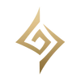

Sobre as Runas
As runas são atributos especiais que agregam valor a cada campeão e à sua respectiva função no jogo. Divididas em cinco grupos, elas têm uma importância fundamental para o funcionamento dos personagens, chegando a ponto de inviabilizar o uso de algum campeão caso esteja com a runa errada.
Além disso, as runas dizem muito sobre o metagame de cada época do League of Legends, e também são indicativos de como cada player jogará o seu jogo. Com isso em mente.
As runas são sempre escolhidas na fase de picks e bans do LoL. Normalmente, os jogadores escolhem os seus campeões, analisam campeões aliados e adversários, e então montam a sua árvore de runas. É possível escolher uma árvore de runa principal e outra secundária.
Cada árvore de runa representa um status padrão do jogo. A árvore de dominação, por exemplo, tem o foco em dano explosivo e facilidade de acesso ao alvo. Dessa forma, as runas de dominação são comumente usadas com campeões assassinos. Entretanto, ela também pode ser viável para outros tipos de campeões.
Árvores de runa do LoL
Precisão: foco em ataques aprimorados e sustentação de dano;
Dominação: foco em dano explosivo e acesso ao alvo;
Feitiçaria: foco em fortalecimento de habilidades e manipulação de recursos;
 Determinação: foco em durabilidade e controle de grupo;
Determinação: foco em durabilidade e controle de grupo;
Inspiração: foco em ferramentas criativas e distorção das regras.
Para escolher a melhor runa na hora de uma partida, antes de tudo é necessário conhecer cada uma delas, especialmente as principais de cada árvore. Cada tipo de campeão costuma ter maior sintonia com determinado tipo de runa, porém combinações criativas surgem constantemente no metagame do LoL. Veja, a seguir, todas as runas de cada árvore.
PRECISÃO
A árvore de precisão tem foco nos ataques aprimorados e na sustentação de dano. Isso significa que especialmente campeões ataques básicos e de dano físico por segundo costumam utilizar esse estilo. Entretanto, runas como Conquistador e Agilidade nos Pés da árvore de precisão podem ser usadas por diversos tipos de campeões.
Runas principais
Pressione o ataque: atingir um campeão 3 vezes consecutivas o deixa vulnerável, causando dano adicional e fazendo com que ele receba mais dano de todas as fontes por 6 segundos;
Ritmo fatal: recebe Velocidade de Ataque ao atacar um campeão inimigo, acumulando até 6 vezes. Com o máximo de acúmulos, recebe Alcance de Ataque e remove seu limite de Velocidade de Ataque;
Agilidade nos pés: atacar e se movimentar geram acúmulos de Energia. Com 100 acúmulos, o próximo ataque irá curar e conceder Velocidade de Movimento;
Conquistador: ganha acúmulos de força adaptativa ao atacar campeões inimigos. Após alcançar 12 acúmulos, cura uma parte do dano causado à campeões.
Runas secundárias
Cura excessiva: curar após vida cheia concede um escudo;
Triunfo: abates restauram 10% da vida perdida e concedem 20% de ouro adicional;
Presença de espírito: aumenta regeneração de mana ou energia quando causar dano a um campeão inimigo. Eliminações restauram mana ou energia;
Lenda: espontaneidade: abates em inimigos concedem Velocidade de Ataque permanente;
Lenda: tenacidade: abates em inimigos concedem Tenacidade permanente;
Lenda: linhagem: abates em inimigos concedem Roubo de Vida permanente até um limite. Quando o limite é atingido, a Vida Máxima é aumentada;
Golpe de misericórdia: causa mais dano a campeões inimigos com pouca vida;
Dilacerar: causa mais dano a campeões inimigos que tenham vida máxima maior;
Até a morte: causa mais dano a campeões quando estiver com pouca vida.
DOMINAÇÃO
A árvore de Dominação tem foco no dano explosivo e no acesso ao alvo. Normalmente são utilizadas por assassinos e campeões que conseguem causar muito dano em pouco tempo. Entretanto, pode ser utilizada por personagens que desempenham funções diferentes, como na selva com o Predador ou campeões de poke com Colheita Sombria.
Runas principais
Eletrocutar: atacar um inimigo três vezes em até três segundos causa dano adaptativo adicional;
Predador: transforma as botas em um item ativo. Ao ativar, garante de Velocidade de Movimento adicional e faz com que o próximo ataque ou habilidade cause Dano Adaptativo adicional;
Colheita Sombria:Causar dano a um campeão que está com pouca vida inflige dano adaptativo e colhe a Alma da vítima, que aumenta o dano permanentemente;
Chuva de Lâminas: concede uma grande quantidade de Velocidade de Ataque pelos primeiros três ataques contra campeões inimigos.
Runas secundárias
Golpe desleal:causa Dano Verdadeiro adicional a campeões inimigos com mobilidade ou ações debilitadas;
Gosto de sangue:cura uma pequena quantia de vida após causar dano no inimigo;
Impacto repentino:causa dano adicional após saltos, avanços, teleporte, teletransporte ou após sair de furtividade;
Sentinela zumbi:cria uma sentinela no lugar de uma sentinela inimiga destruída. Recebe permanentemente Dano de Ataque ou Poder de Habilidade por cada Sentinela Zumbi posicionada, além de adicionais ao completar a coleção;
Poro fantasma:após uma sentinela ser destruída, um poro surge no lugar concedendo visão por mais tempo. Recebe permanentemente Dano de Ataque ou Poder de Habilidade por cada Poro Fantasma e quando ele avisar um inimigo, além de adicionais ao completar a coleção;
Globos oculares:ganha dano adaptativo a cada campeão abatido;
Caçador de tesouros:eliminações únicas concedem ouro adicional na primeira vez que são coletadas;
Caça ardilosa:recebe uma porcentagem de redução de tempo de recarga de itens ativos;
Caça incansável:recebe velocidade de movimento permanente fora de combate;
Caça suprema:seu ultimate recebe uma porcentagem de redução de tempo de recarga.
FEITIÇARIA
A árvore de Feitiçaria tem foco no fortalecimento de habilidades e manipulação de recursos. Ela é normalmente usada por campeões magos que abusam muito de habilidades, sejam magos com muito controle de grupo ou com skills de poke. Suportes de magia também costumam utilizar runas dessa árvore.
Runas principais
Invocar Aery:os ataques e habilidades levam Aery até a um alvo, causando dano a inimigos ou protegendo aliados com um escudo;
Cometa arcano:o campeão dispara um cometa que causa dano adicional ao atacar um inimigo com uma habilidade. É possível desviar do asteroide;
Ímpeto Gradual:atingir um campeão com três ataques ou habilidades diferentes concede Velocidade de Movimento.
Runas secundárias
Orbe anulador:concede um escudo após receber dano mágico estando com vida baixa;
Faixa de fluxo de mana:aumenta quantidade de mana permanentemente após atingir um inimigo com habilidades;
Manto de Nimbus:concede velocidade de movimento após usar o ultimate;
Transcendência:concede Aceleração de Habilidade nos níveis 5 e 8. No nível 11, concede reduz o Tempo de Recarga das habilidades básicas em 20%;
Chamuscar:suas habilidades incineram campeões a cada 10s causando dano adicional;
Caminhar sobre as águas:recebe velocidade de movimento, ataque e poder de habilidade adicionais enquanto estiver no rio.
Tempestade crescente:ganha dano adaptativo ao longo da partida.
DETERMINAÇÃO
A árvore de Determinação tem foco em durabilidade e em controle de grupo. Normalmente, campeões tanks e com muita utilidade utilizam essas runas. Suportes de iniciação, especialmente, abusam dessa árvore.
Runas principais
Aperto dos mortos-vivos:a cada 4s, o próximo ataque contra um campeão causa dano mágico adicional, cura e aumenta permanentemente a vida;
Pós-choque:após imobilizar um campeão inimigo, ganha defesas e depois causa um ataque de dano mágico explosivo ao redor;
Protetor:protege aliado nos quais conjurou uma habilidade ou aliados próximos ao campeão. Se o campeão ou um aliado protegido sofrer dano, todos recebem um escudo.
Runas secundárias
Demolir:carrega um poderoso ataque contra uma torre quando estiver perto dela;
Fonte da vida:debilitar o movimento de um campeão inimigo o deixa marcado. Seus aliados são curados quando atacam um campeão marcado;
Golpe de escudo:sempre que receber um escudo, o próximo ataque básico contra um campeão causará dano adaptativo adicional;
Condicionamento:depois de 12 minutos, recebe +9 de armadura e +9 de resistência mágica, e aumenta a armadura e resistência mágica em 4%;
Ventos revigorantes:após receber dano de um campeão inimigo, um pouco da vida perdida é restaurada ao longo do tempo;
Osso revestido:após sofrer dano de um campeão inimigo, os próximos três ataques ou habilidades que sofrer dele causarão de 30 a 60 a menos de dano;
Crescimento excessivo:recebe vida máxima permanente quando tropas inimigas ou monstros são abatidos perto de você;
Revitalizar:recebe 5% de cura e resistência do escudo. Curas e escudos conjurados ou recebidos são 10% mais fortes em alvos com menos de 40% da vida;
Inabalável:ganha um pouco de Tenacidade que aumenta com a vida perdida.
INSPIRAÇÃO
A árvore de Inspiração tem um foco maior na criatividade e formação de novos atributos. As habilidades dessa árvore não possuem um tipo de campeão específico que se encaixe, podem ser usadas por diversos tipos de personagem, especialmente como árvore secundária.
Runas principais
Aprimoramento Glacial:imobilizar um campeão inimigo irá invocar três raios glaciais que causam lentidão a inimigos próximos e reduzem o dano deles contra aliados;
Livro de feitiços deslacrado:troque de feitiços de invocador quando estiver fora de combate;
Primeiro ataque:ao iniciar um combate contra um campeão, você causa 10% de dano adicional por 3s e recebe ouro com base no dano causado;
Runas secundárias
Flash Hextec:enquanto Flash estiver em tempo de recarga, ele é substituído por Flash Hextec, que precisa ser canalizado para ser usado;
Calçados mágicos:concede Botas gratuitamente aos 12 min, mas não é possível comprar Botas antes disso. Cada abate faz as botas virem 45s mais cedo;
Sincronia perfeita:ganha um Cronômetro Inicial. Após os 14 min, é possível usá-lo uma vez para obter o efeito de Estase. Cada eliminação diminui o tempo em 120s.
Mercado do futuro:você pode ficar em débito para comprar itens;
Pulverizador de tropas:pulveriza tropas instantaneamente. Possui três cargas;
Entrega de biscoitos:recebe biscoitos até o sexto minuto de jogo. Biscoitos recuperam vida e mana perdidas por um período;
Perspicácia cósmica:concede +18 de Aceleração de Feitiço de Invocador e +10 de Aceleração de Item;
Velocidade de aproximação:concede Velocidade de Movimento adicional em direção a campeões inimigos próximos com movimento debilitado, aumentada em campeões inimigos cujo movimento você debilitou;
Tônico de distorção do tempo:poções e biscoitos concedem um pouco de restauração imediatamente. Recebe velocidade de movimento enquanto sob seus efeitos.

As runas ainda possuem uma aba voltada apenas para status básicos de campeões. Nela, os jogadores podem escolher entre ganhar maior dano adaptativo, velocidade de ataque, aceleração de habilidade, armadura, resistência mágica e vida.
Após entender a função de cada runa do League of Legends, o jogador estará muito mais apto a realizar as suas combinações e traçar o seu estilo de jogo. Entretanto, é sempre interessante estar atento ao metagame do LoL, especialmente ao o que os jogadores profissionais e de alto elo estão utilizando.
Para isso, alguns sites como o "OPGG", "ProBuilds" e "LeagueOfGraphs" podem ser de grande auxílio na hora da escolha da runa. Esses sites mostram as runas mais utilizadas e com maior porcentagem de vitória para cada campeão, e ajudam muito no entendimento do metagame do jogo.

.jpg)